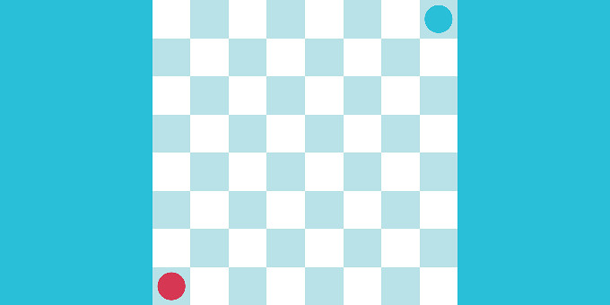
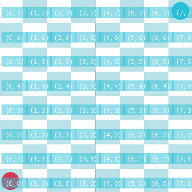

Creating Your Own Piece Rules

In this tutorial, we will look at how to implement special rules for your pieces. We will use this setup:

This game has the following rules:
- One turn per player.
- Red starts.
- You can’t capture an enemy piece.
- Red pieces only move to odd x and y positions.
- Blue pieces only move to even x and y positions.
- No piece can move to its initial position.
Since the piece rules cannot be implemented using the default piece rules, we need to implement our own piece rules.
1. Make a Piece Rule Script
Create a new script and call it CustomPieceRule. Add this to the logical piece prefab. The class must extend from
the PieceRule abstract class, which uses a RectPoint and GridGamePieceSettings type like this:
public class CustomPieceRule : PieceRule<RectPoint, GridGamePieceSettings>
This abstract class will ask you to implement the following abstract methods:
CanRemovePiece: Returns whether or not a piece’s owner can remove a piece from a given point. It returns a boolean. Used when you are creating a rule about moving the pieces.GetCapturePosition: Returns the destination position a piece must move to in order to capture the given piece. It returns a TPoint of the position. Used when you are creating a rule about capturing pieces.GetValidAddPositions: Returns all valid positions to which a new instance of this piece can be added. Returns an IEnumerable, it can be a coroutine. Used when you are creating a rule about moving the pieces.GetValidCapturePieces: Returns all valid pieces this piece can capture. Returns an IEnumerable, it can be a coroutine. Used when you are creating a rule about capturing pieces.GetValidDestinationPositions: Returns all valid positions to which a given piece can be moved. Returns an IEnumerable, it can be a coroutine. Used when you are creating a rule about moving the pieces.
Since we are only implementing a special movement rule for the pieces, we are only going to use GetValidDestinationPositions, and all other methods will return their default values so that the automatic calls to these methods do nothing.
2. Define Rule Restrictions
Define an enum to choose between odd and even numbers and two fields of this type in the CustomPieceRule class – one for x and one for y. Also, add a useRestriction boolean so that you can switch between using and not using the rule restrictions to see the difference. Implement the GetValidDestinationPositions method. Iterate over all points in the grid, and for each point:
- If the point equals the initial position, continue the loop.
- Find the pieces at that point. If there are no pieces, continue the loop.
- Validate the point depending on how the odd/even variables for x and y are set (use a separate method for this). If the validation fails, continue the loop.
- Yield the point.
With this, the movement rules are complete and you can play and test the game.